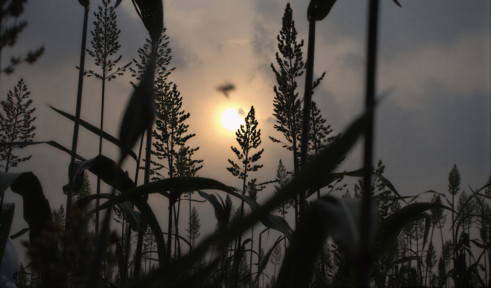
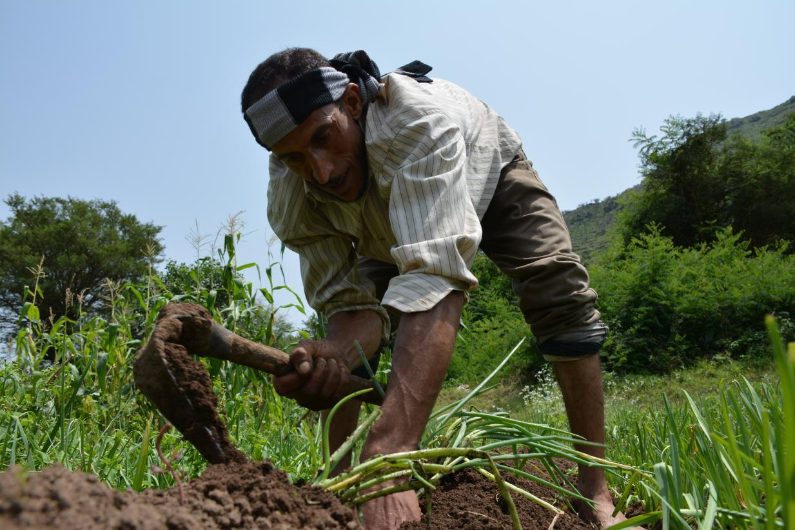
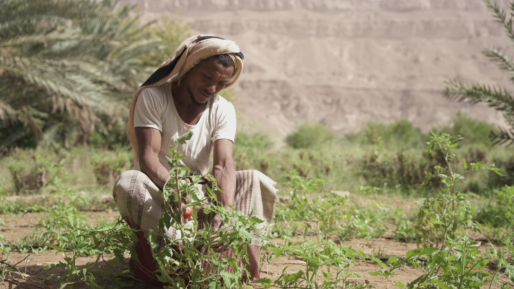
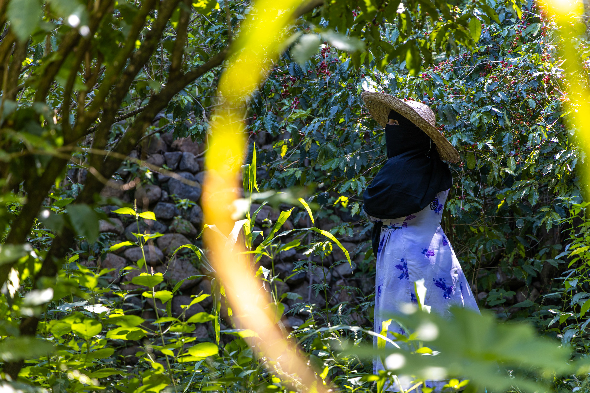
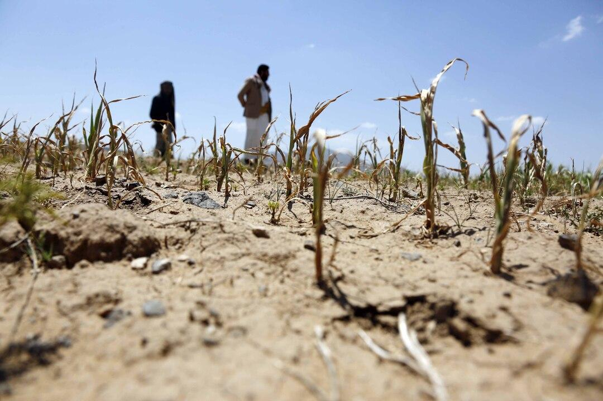
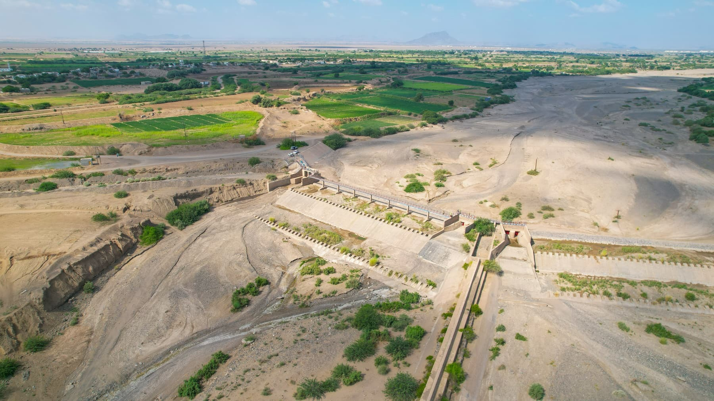

Food Security in Yemen
What it is, Main Aspects & Reasons For Our Charity...

Definition
What is Food Security?
Food security means that everyone, at all times, has physical and economic access to enough safe and nutritious food to live a healthy and active life.

Aspects
What are 4 Important Aspects of Food Security?
Food Availability
Food must physically exist in sufficient quantities. This can come from local farming, livestock, fishing, food imports and humanitarian assistance.
In Yemen, food availability is affected by low agricultural production, water shortages, drought, conflict and damage to agricultural infrastructure. Yemen also depends heavily on imported food, making the country vulnerable when international prices and transport costs increase.

Food Accessibility
People must be able to obtain and afford the food that is available
Food can exist in a market but still be inaccessible if people cannot afford it. In Yemen, poverty, unemployment, inflation and rising food and fuel prices make it difficult for many families to buy enough food.

Food Stability
People need reliable access to food over time. Food security should not disappear because of a drought, flood, conflict or sudden increase in prices.
Yemen has experienced years of conflict and economic instability. Climate-related events such as droughts and flash floods can also damage crops and livestock, making food supplies less reliable.

Knowledge & Resources
People need the knowledge, resources and services required to produce, prepare and use food safely and effectively.
For farmers, this includes access to seeds, fertiliser, irrigation, agricultural equipment, markets, farming knowledge and financial support. In Yemen, farmers often struggle to access these resources because of conflict, high costs, damaged infrastructure and water shortages.

Reason
Why Yemen?
Our charity is focusing on Yemen because it is experiencing one of the world's most serious food-security crises.
In 2026, the United Nations estimated that 18.3 million people in Yemen were acutely food insecure. More than 22 million people were expected to need humanitarian assistance and protection services.
In government-controlled areas, around 5 million people were experiencing Crisis-level food insecurity or worse between March and May 2026. This represented 47% of the analysed population. The number was projected to increase to 5.4 million people during the June to September 2026 lean season.
Our Purpose
The purpose of this website is to raise awareness about food insecurity in Yemen. It explains the environmental, economic and political factors that contribute to hunger and examines realistic solutions that could help improve food security.